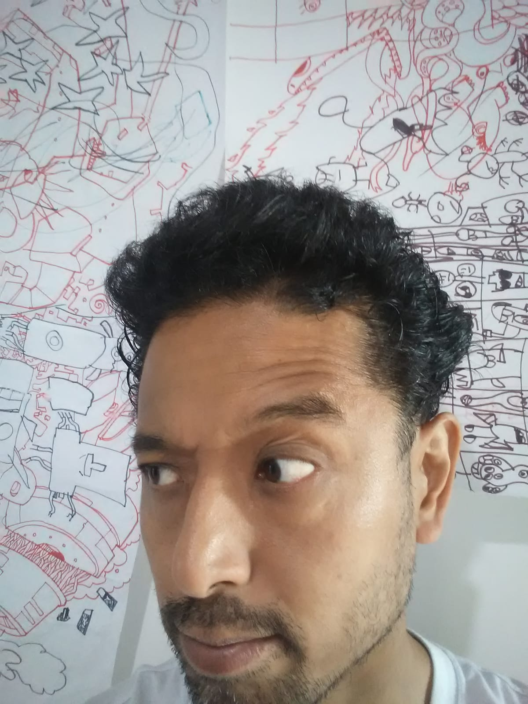

Brinquedos ópticos de animação
Local: SALA 24
Data: 22/08 (ter) - 14h às 18h
Entenda como o princípio dos desenhos animados amplamente difundidos na TV e nos meios digitais pode ser facilmente reproduzível analogicamente com materiais simples. Tenha a experiência concreta de perceber os movimentos acontecendo em tinta e papel e produza suas próprias animações.